|
👉 如果不去做專業的檢測，要怎麼樣做，才能知道自己肌膚正在老化，需要開始正視自己的狀態了呢？ |
透過簡單的測驗，
讓我們能更加瞭解自己的肌膚
得到10 分以上的話
！要小心！「妳的肌膚正在老化中」
□換季或是悶熱時肌膚經常出油但仍覺得乾燥無比 (2分)
□臉頰兩側毛孔很大 (1分)
□就算睡眠足夠，黑眼圈看起來還是很深 (2分)
□黯沉一年比一年深……
(2分)□嘴角眼周的紋路明顯到很難忽略 (3 分)
_____________
妳跟我一樣老化年齡提前了嗎？ 🥀
偷偷說有保養還是有差，
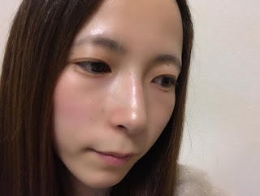讓朱姐來大撒糖~告訴大家怎麼做
朱姐也是透過線上測驗，才開始正視肌膚問題
立刻去藥妝店買瓶精華液回家趕快狂擦
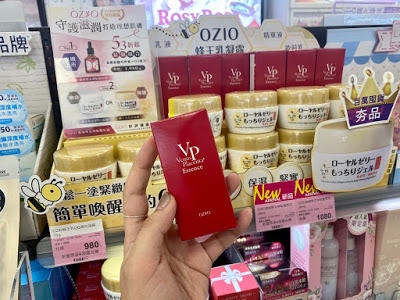
原本隨著年紀越變越乾老的臉
慢慢變得比較嫩
捏起來有一點「回彈」的感覺
整張臉都提亮了
看起來比較有光澤
跟男同事也熱絡起來
（原來也會增加桃花呀☺）
是不是有北鼻肌！！
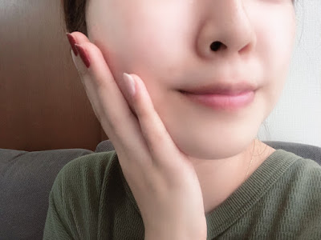神奇的「減齡保養祕訣！ 」
就是使用~~ OZIO 蜂王乳凝露 姊妹產品全新力作
即刻救援皺紋猖獗的肌膚
+緊緻抗皺有感提升！
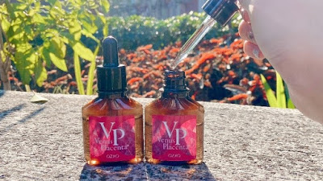而網路也大獲好評FG 評鑑竟 高達4.1分！
（掌聲加尖叫👏CP高慘了 ）
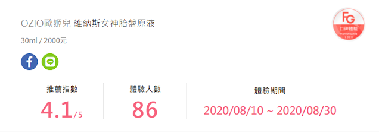胎盤原液是王宇婕代言的，
朱姐也是查了才知道
王宇婕居然已經要４０歲了，
皮膚維持的那麼Ｑ彈有光澤真的很驚人。
超多網美們都大大稱讚說：
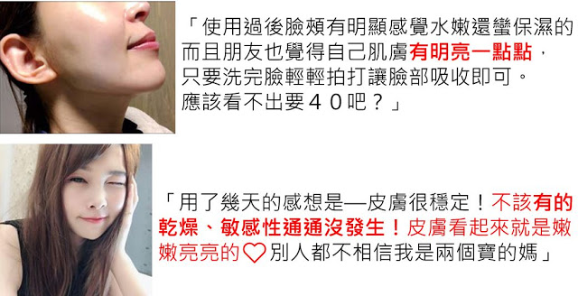這麼厲害的原因在於！
✅ 獨家添加 胎盤素 100%
+蛋白多糖100%
+臍帶萃取之 100%原液
✅ 絕佳滲透力，能有效協助後續保養品的吸收
✅ 無色素 ，人工香料、人工色素、礦物油一率不使用
朱姐教你如何透過 女神胎盤素 『 快速 減齡』
♦ ️ 眼周保養
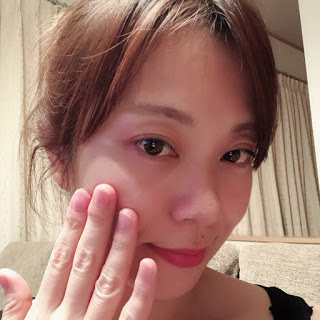如果只有擦擦化妝水來保養整個臉部是不夠的！
✅ 高濃度300%美容液
一邊輕輕按摩一邊塗在眼部周圍即可，
短時間內我就感覺眼尾的小細紋說慢慢走遠！
♦ ️ 脖子也要保養
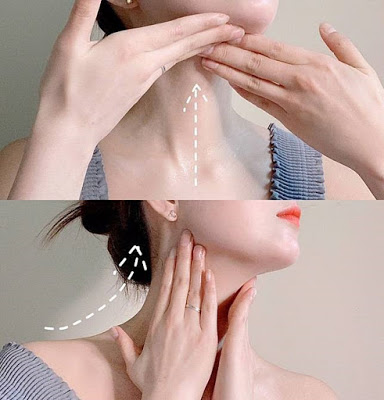加上長時間低頭花手機，容易產生細紋，
那就要搭配由下而上的手勢，
稍微施點力道往上推，
一路從頸部向耳際推，再從臉頰往太陽穴位置推～

延展性很高，輕輕按摩就吸收了～
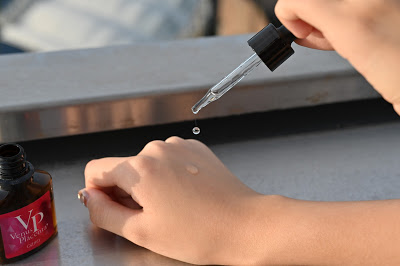
我只是在平常的保養中多加入了胎盤素，
就更加達到抗皺、緊實的效果！
※不用花大錢換整套保養品太好了！
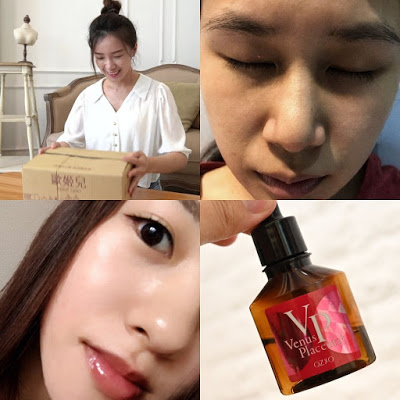當作妝前保養也很棒呦，
完全不會跟底妝打架
看我完妝後的臉就知道持續到傍晚都不是問題~
所以說 大家！ 變年輕不要嫌麻煩！
OZIO 胎盤原液含有 3 種100%的美容液
所以更有效果，更保濕。 讓保養可以事半功倍

而上面教的這些招除了可以 抗老
還能借助按摩幫助 身心靈放鬆~
更有運氣與精神過每一天～～重點是 招桃花！
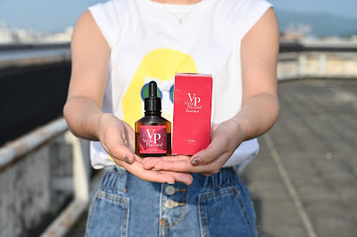↓↓OZIO胎盤原液官網點這裡↓↓